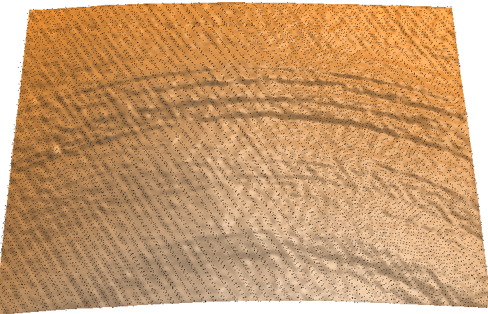
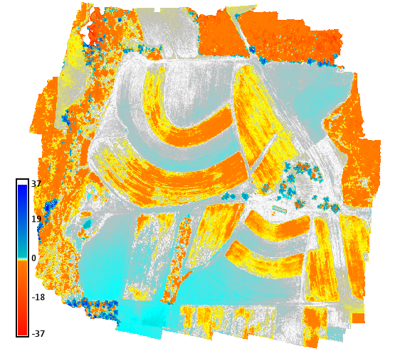
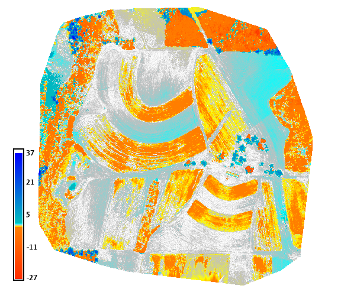
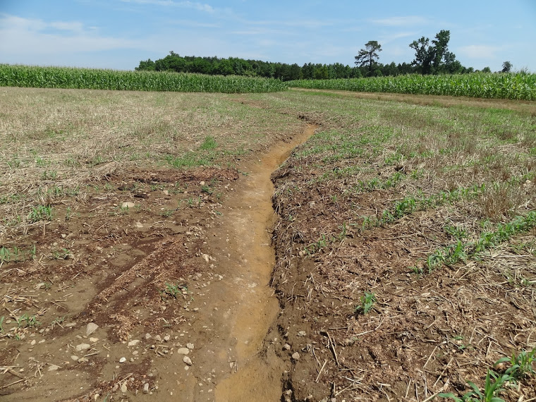
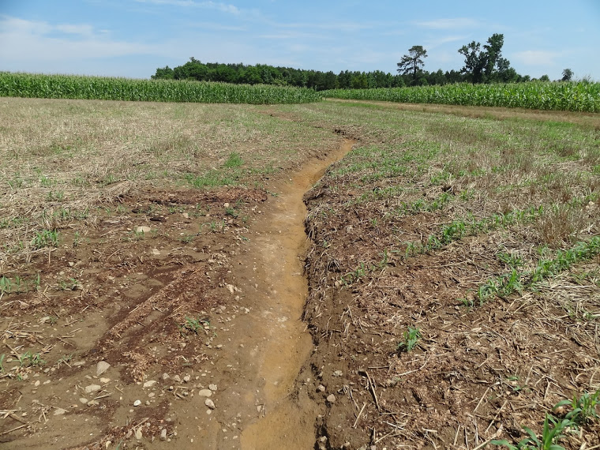

Comparison and fusion of UAS SfM and lidar data
GIS595/MEA792: UAV/lidar Data Analytics
Outline
- Analysis of lidar and UAS SfM-derived DSMs differences
- Patching and smooth fusion of UAS and lidar DSM
- Fusion for flow modeling
Point clouds from lidar and SfM
- Lidar:
- measured variable is time of return for each pulse
- georeferencing is based on the position (measured by GPS)
and exterior orientation (measured by inertial navigation system INS) of the platform
- (x,y,z) is derived from time, GPS positioning and INS parameters
Point clouds from lidar and SfM
- SfM:
- measured variable is reflected energy captured as imagery
- georeferencing can be done entirely from GCPs (GPS is needed)
- (x,y,z) is derived from overlapping images and GCPs
- alternatively: GPS and INS for position and orientation of images and camera parameters
- Lidar and SfM provide independent set of measurements.
- Georeferencing accuracy depends on GPS and INS
Comparison of lidar and SfM point clouds
- Lidar: passes through vegetation, multiple return, measured profiles in overalpping swaths,
shifts between swaths, condurroy effect
-
SfM: very high density, but influenced by cast shadows, difficult to map under vegetation
-
Different distribution of error and distortions


Point cloud to DSM
- binning
- meshes / TIN
- spatial interpolation (gridding)
- error from this process is usually much smaller than measurement error, because of high point density
DSM differencing
- Spatial pattern of distortions, systematic errors and noise
- Difference maps between Lidar DSM and UAS SfM DSM (AGISOFT and PIX4D)


images by Brendan Harmon
DSM differencing
- change in elevation surface due to processes
- vegetation growth, erosion

 

Comparing profiles
- identify systematic errors (vertical shifts)
- differences due to vegetation growth, erosion/deposition


Correct for systematic error and distortions
- systematic error - if due to GPS shift: median difference
- systematic error - if tilt, use regression function
- some complex UAS distortions can be reduced using interpolated GCP differences
or differencing with lidar
Updating lidar DSM by patching
- replace the grid cells in the updated area by UAS DSM
- averaging over an overlap
- usually creates an edge - can be post-processed


Smooth fusion
- derive overlap raster
- weighted smoothing based on the distance from the edge


Viewsheds
- provide analysis to support siting of a monitoring webcam
- evaluate influence on using different DSMs on the viewshed extent